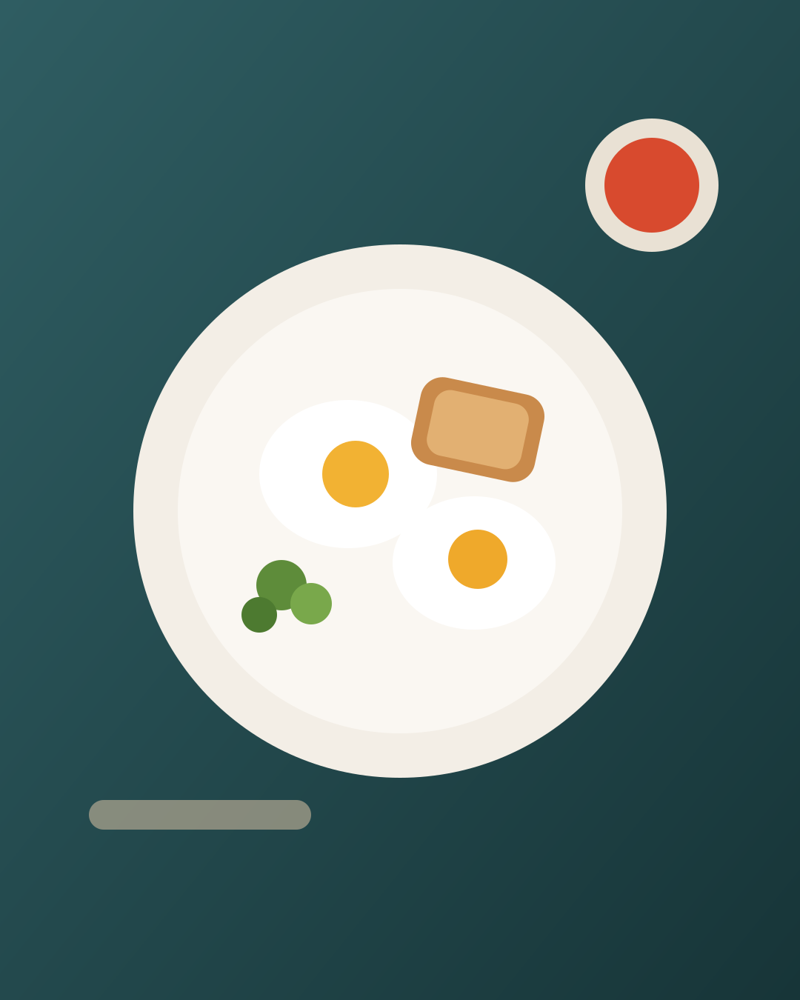

New post
1
Organic or ad
OrganicPosted on the page by the team. Not counted as an ad.
AdPaid, set up in Meta by the team. Counts as 1 ad once it goes to Meta.
2
Type
Single image1 image
Carousel2–10 cards · first card sets the size
Video1 video · shows as a Reel
Story1 image or video · 9:16
AlbumFacebook organic only. For an ad, use Carousel.
DocumentLinkedIn organic only. Ads run on Meta.
3
Size
4:5Best for feeds
1:1Marketplace and Right column
9:16Fills Stories and Reels
1.91:1Wide, feeds only
3:4Organic Instagram only
4
Where it runs
Platforms
FacebookSabeel Bakery | مخبز سبيل
Instagram@sabeel.bakery
LinkedInAds run on Meta only. LinkedIn takes organic posts.
Placements
Facebook
Feed
Marketplace
Right columnComputers only
Instagram
Feed
Explore home
Facebook and Instagram
Stories4:5 shows smaller, with space around it
Reels
Also runs on, no preview: Facebook profile feed, business explore, search results, in-stream reels, ads on Facebook Reels, Threads, WhatsApp status, Messenger Stories, Audience Network.
Ad details
Goal
Traffic
Funnel stage
AcquisitionSuggested
Suggested from the goal. You can change it.Start date
5 Nov 2026
End date (optional)
30 Nov 2026
Counts as 1 ad in the November package once it goes to Meta review. Draft and rejected ads never count. Now: 3 of 6 used · 3 left.
5
Media and text

brunch-hero-final.jpgFits 4:5 · 1440 x 1800Replace image
Title
Weekend brunch menu launch, Zamalek branch
Shown in the Dash only, not on the post.Primary text
Weekend brunch is back: buttery croissants, shakshuka and sourdough toast, every Friday and Saturday from 9 am. احجز ترابيزتك أو اطلب مسبقًا من الرابط.
The first 125 characters show before "more".151 / 125
Headline
Weekend brunch from 9 am
27 in feeds, 40 in Marketplace24 / 27
Button
Order now
Primary text is 26 characters over 125. The end hides behind "more" in Stories and Feed. You can still continue.